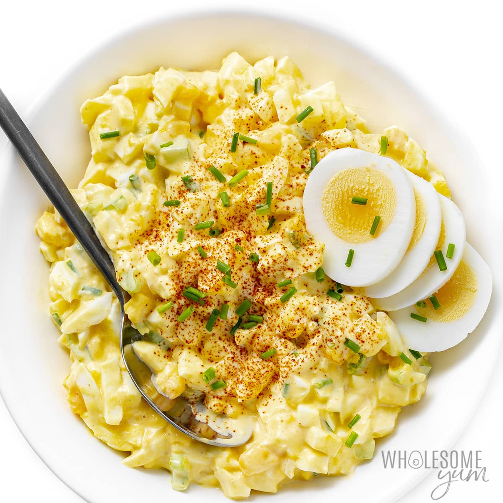

Heavenly Egg Salad

Description
The tang from the Dijon, freshness from the lemon, and liveliness when paired with watercress makes this recipe a MUST!
! This recipe tastes best when paired with wheat bread, watercress and avocado!! But I can eat it by itself
What are we waiting for?!
Ingredients
- 6 eggs
- ¼ cup mayonnaise
- 1 teaspoon Dijon mustard
- ½ teaspoon prepared yellow mustard
- ½ lemon, juiced
- ¼ cup chopped green onions
- salt and pepper to taste
Steps
- Place egg in a saucepan and cover with cold water. Bring water to a boil and immediately remove from heat.
- over and let eggs stand in hot water for 10 to 12 minutes. Remove from hot water, cool and peel.
For faster cooling, place the eggs in an ice bath before peeling.
- In a medium bowl, stir together the mayonnaise, Dijon mustard, yellow mustard, lemon juice and green onions.
- Chop the eggs into big chunks and mix gently with the dressing. Season with salt and pepper.
Hope you enjoy this dish with your loved ones. Let us know in the comments!